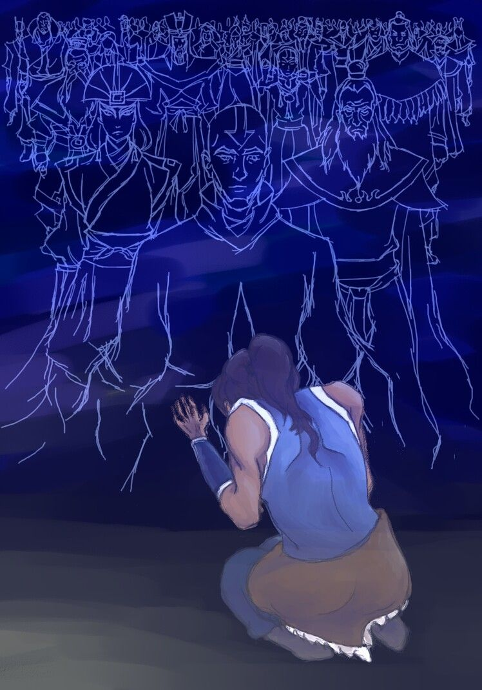
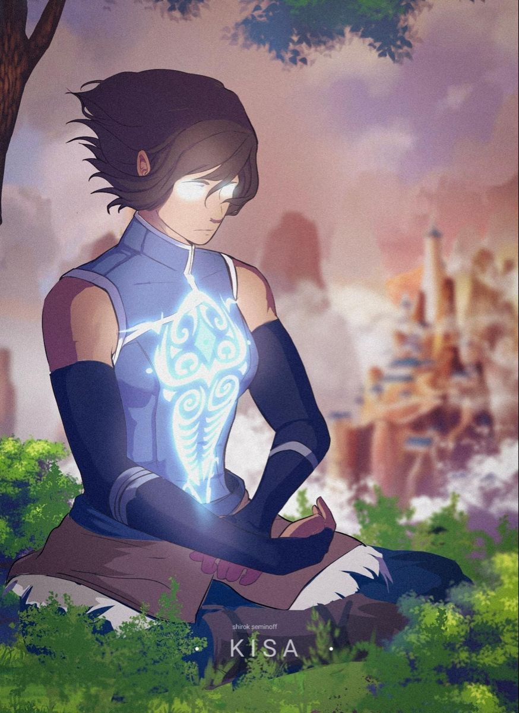
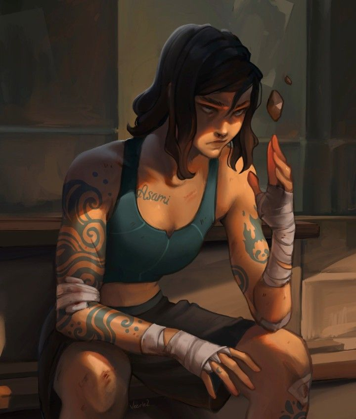
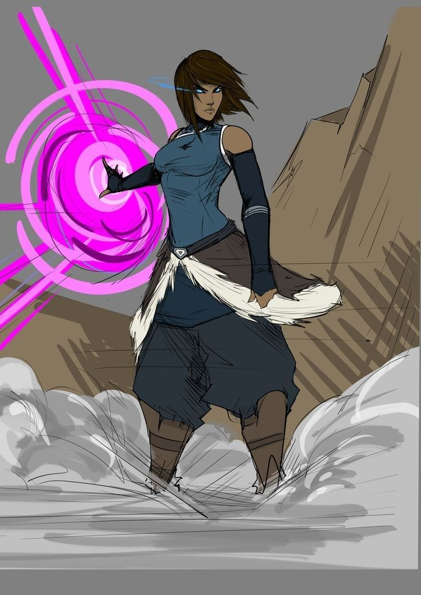
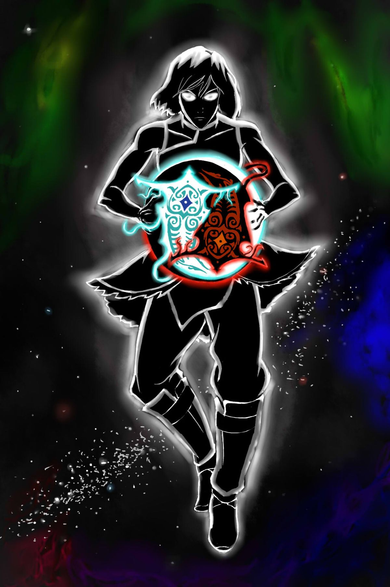

Description Physique
Par le passé, Sasha portait des cheveux longs et volumineux. Ses proches lui conseillèrent de les couper, autant pour des raisons d’efficacité que pour éviter qu’ils deviennent une faiblesse face à un adversaire. Depuis, ses cheveux noirs lui arrivent au menton, donnant à son apparence quelque chose de plus direct et plus tranchant.
Sasha tient son teint ébène de sa mère, ainsi que ses cheveux noirs et brillants et ses yeux sombres. De son père, elle semble surtout avoir hérité de la forme particulière de ses yeux et de cette façon de fixer le monde comme si rien ne pouvait vraiment l’ébranler.
Elle mesure environ 1m70 et possède un corps athlétique, non pas parce qu’elle cherche à impressionner, mais parce qu’elle a toujours été habituée à bouger, s’entraîner et se débrouiller seule. Son regard est souvent calme, presque indifférent, ce qui peut donner l’impression qu’elle juge les gens avant même qu’ils lui parlent.
Malgré son rôle de soigneuse, Sasha n’a pas l’apparence de quelqu’un de fragile. Elle dégage plutôt l’image d’une personne solide, capable de rester debout même quand les autres commencent à tomber.

Personnalité
En famille
Avec sa famille, Sasha est beaucoup plus souriante, amicale et affective qu’elle ne le montre avec les autres. Elle peut même se montrer un peu tactile, chose qu’une personne de son rang devrait normalement éviter, surtout en public. Mais son éducation et son vécu ont fait qu’elle a toujours eu besoin de beaucoup d’amour et d’attention de la part de ses proches.
Depuis que ses parents sont partis faire affaire dans un autre pays, ce besoin s’est encore plus renforcé. Sa famille reste donc le seul cercle où Sasha baisse vraiment sa garde, sans avoir à jouer un rôle ou à garder cette façade froide qu’elle montre au reste du monde.
Entre amis
On va pas se mentir, Sasha n’a pas énormément d’amis. Avant d’atteindre son rang actuel, elle s’était déjà battue pour quelqu’un en qui elle croyait, espérant sincèrement que ce lien avait une vraie valeur. Mais cette personne n’a pas fait long feu, et cette expérience lui a appris une chose assez dure : pour elle, les liens d’amitié restent fragiles, parfois même futiles, surtout comparés aux liens familiaux.
Sasha peut encore se faire des amis, elle peut apprécier certaines personnes, rire avec elles ou même leur accorder un peu de confiance, mais elle ne se battra plus aveuglément pour eux. Elle restera souvent froide, distante et impartiale, même avec ceux qu’elle considère comme proches.
Avec les inconnus
Avec les personnes qu’elle ne connaît pas, Sasha est généralement fermée. Cela ne sert pas à grand chose de venir lui demander quelque chose sans raison valable, car elle ne prend même pas toujours la peine de répondre.
Elle adresse rarement la parole aux inconnus, et son regard froid suffit souvent à faire comprendre qu’elle ne veut pas être dérangée. Ce n’est pas forcément de la méchanceté, mais plutôt une manière de garder ses distances et d’éviter de perdre du temps avec des gens qui n’ont aucune importance à ses yeux.
Précision
Le caractère de Sasha peut évoluer selon les événements en RP. Ses relations avec les autres peuvent changer, que ce soit en bien ou en mal, selon ce qu’elle vit et les personnes qu’elle rencontre. Cependant, une chose restera toujours fixe : sa confiance aveugle envers sa famille.
Histoire
Chapitre 1 — Une éducation dure
Sasha Solsa n’a pas grandit dans une famille où l’on félicitait les enfants pour le moindre petit effort. Chez elle, on lui a très vite appris que le respect, la discipline et la réussite n’étaient pas des options. Sa mère lui donna une éducation très stricte, presque à l’africaine dans la manière de voir les choses : tu respectes les anciens, tu réponds pas trop, tu aides à la maison, et surtout tu ne fais pas honte à ta famille.
Son père, lui, avait une vision plus scolaire et plus coréenne de l’éducation. Pour lui, les notes, la rigueur, le travail et l’image que Sasha renvoyait étaient très importants. Il ne lui demandait pas seulement d’être bonne, il lui demandait d’être meilleure que les autres. Même quand elle réussissait, on lui faisait comprendre qu’elle pouvait encore faire mieux.
Le problème, c’est que Sasha n’était pas vraiment une enfant facile. Elle avait du potentiel, mais elle avait aussi un caractère compliqué. Elle n’aimait pas qu’on lui dise quoi faire, et plus on essayait de la contrôler, plus elle avait envie de faire l’inverse. À l’école, elle pouvait être intelligente, mais pas forcément sage. Elle répondait parfois aux professeurs, se battait quand on la cherchait trop, et n’avait pas peur de sécher ou de trainer avec les mauvaises personnes.
Beaucoup la voyaient comme une délinquante, ou au minimum comme une fille qui gâchait ses capacités. Mais en réalité, Sasha était surtout quelqu’un qui supportait mal la pression. Elle avait grandi avec l’impression qu’elle devait toujours être forte, toujours réussir, toujours montrer qu’elle n’avait besoin de personne. Alors forcément, quand elle craquait, elle le faisait mal.
Puis vint son éveil. Au début, Sasha ne comprit pas vraiment ce qui lui arrivait. Elle se sentait différente, comme si quelque chose dans son corps avait changé d’un coup. Lorsqu’elle passa les premiers tests, on découvrit qu’elle était devenue une chasseuse. Pas une combattante offensive, pas une mage destructrice, mais une soigneuse. Une classe rare, utile, et surtout très demandée dans les raids.
Chapitre 2 — Le début d’une chasseuse
Après son éveil, Sasha décida de quitter le foyer familial pour vivre en colocation. Ce n’était pas forcément une rupture avec sa famille, mais plutôt une manière de respirer un peu. Elle avait besoin de prouver qu’elle pouvait se débrouiller seule, sans avoir constamment quelqu’un derrière elle pour lui rappeler quoi faire.
Elle venait à peine de passer son examen, et même si son potentiel était jugé intéressant, elle n’avait presque aucune expérience réelle sur le terrain. Son rang B lui donnait déjà une certaine valeur, mais dans les faits, Sasha restait une débutante. Elle connaissait la théorie, elle savait qu’elle pouvait soigner, mais un raid réel n’avait rien à voir avec un test ou un entraînement contrôlé.
Très vite, elle comprit aussi une chose simple : être chasseuse pouvait rapporter de l’argent. Beaucoup d’argent, surtout pour quelqu’un capable de garder les autres en vie. Sasha n’était pas naïve. Elle savait que son éveil pouvait lui ouvrir une porte que peu de gens avaient. Alors elle décida de rentabiliser ce don, pas seulement pour elle, mais aussi pour gagner son indépendance et ne plus dépendre de personne.
Elle passa donc les tests officiels, valida son statut de chasseuse et commença à chercher des raids où une soigneuse était demandée. Sans guilde, sans équipe fixe, et sans vraie réputation, elle dut accepter de commencer modestement. Pourtant, son profil attira vite l’attention : une soigneuse Rang B, jeune, avec du potentiel, c’était rare.
Aujourd’hui, Sasha commence donc sa vie de chasseuse. Elle n’est pas encore une légende, pas encore une héroïne, et encore moins une membre importante d’une grande guilde. Pour l’instant, elle est juste une jeune soigneuse indépendante, froide en apparence, déterminée à faire de l’argent, à survivre, et surtout à prouver que même sans expérience, elle peut devenir indispensable.
Compétences de soin
-
Soin vital
Sasha concentre son mana dans ses mains afin de refermer les blessures légères ou moyennes d’un allié. Ce sort peut arrêter les saignements, calmer la douleur et accélérer la récupération du corps. Ce n’est pas un miracle, elle ne peut pas recréer un membre perdu ou effacer une blessure mortelle en une seconde, mais dans un raid, ce soin peut faire la différence entre quelqu’un qui tombe et quelqu’un qui continue à combattre.
-
Cercle de récupération
Sasha déploie une zone de soin autour d’elle, sous forme d’un cercle lumineux au sol. Les alliés présents dans cette zone récupèrent lentement de leurs blessures légères et ressentent une baisse de fatigue. Ce sort est très utile après une grosse attaque ou pendant les moments où l’équipe doit tenir une position.
-
Purification douce
Sasha utilise son mana pour nettoyer les effets négatifs simples qui touchent un allié : poison faible, engourdissement, fatigue magique ou douleur persistante. Ce sort est surtout utile contre les monstres qui utilisent des effets gênants plutôt que de simples attaques physiques.
-
Stabilisation d’urgence
Sasha concentre une énorme quantité de mana dans ses mains afin de requinquer intégralement un allié au contact. C’est son sort le plus puissant, mais aussi celui qu’elle ne peut pas utiliser n’importe comment. Il demande qu’elle soit proche de la cible, ce qui peut la mettre en danger dans un raid.
Images



